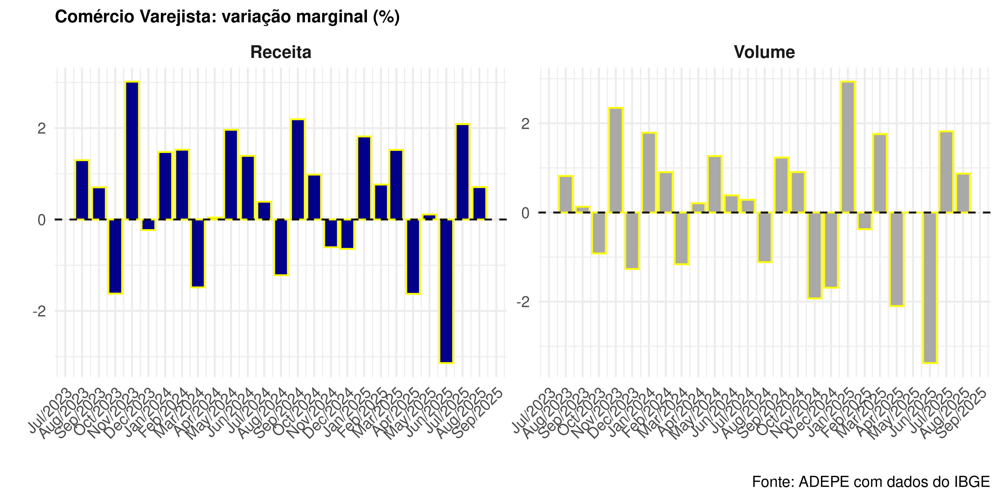
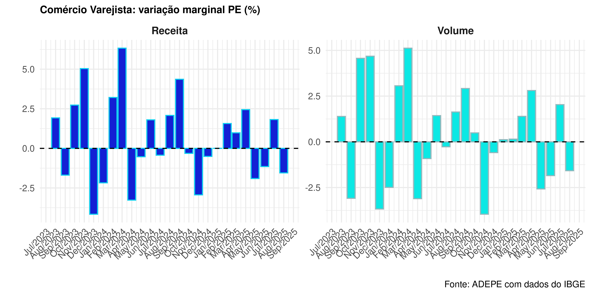
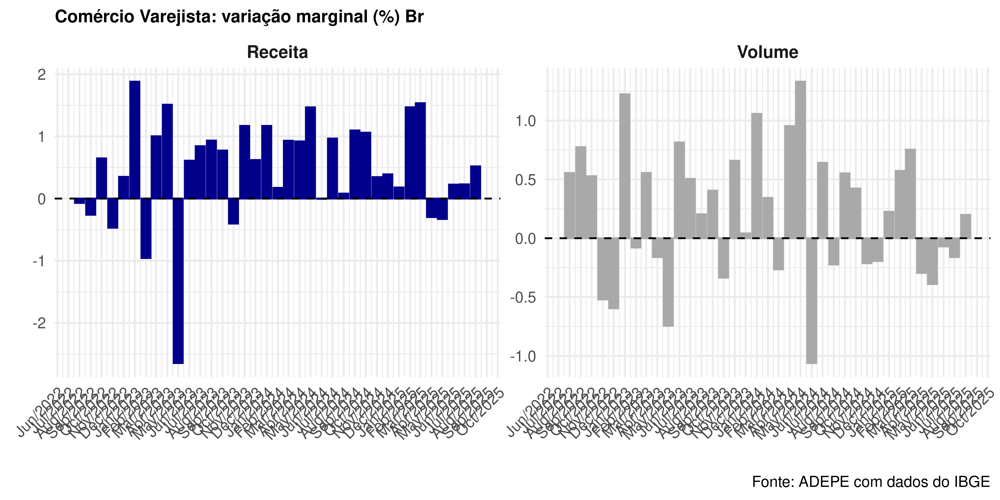
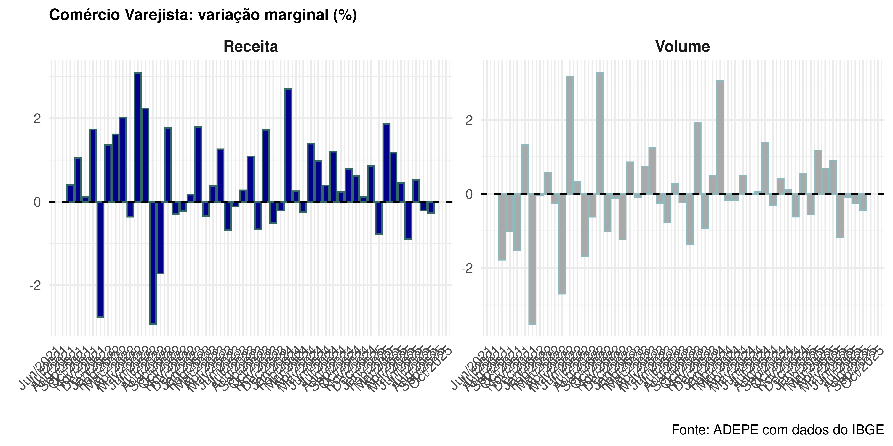
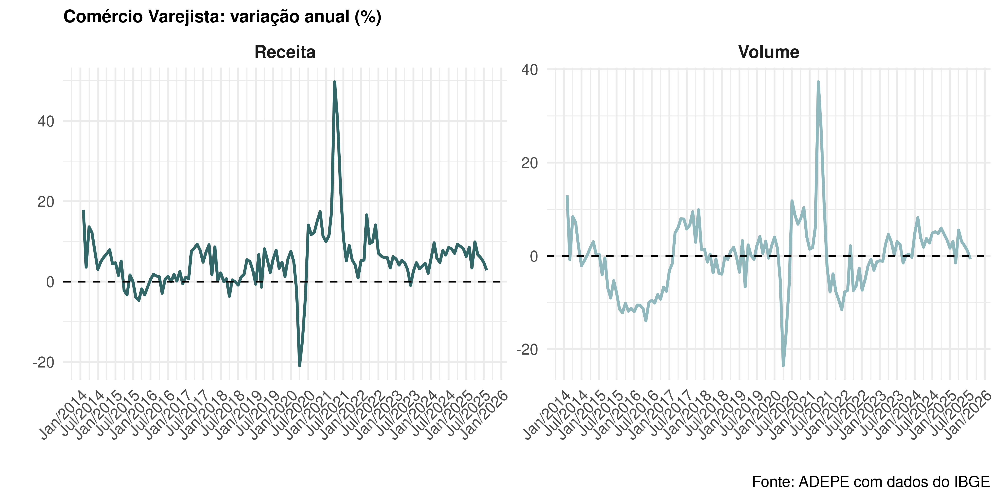
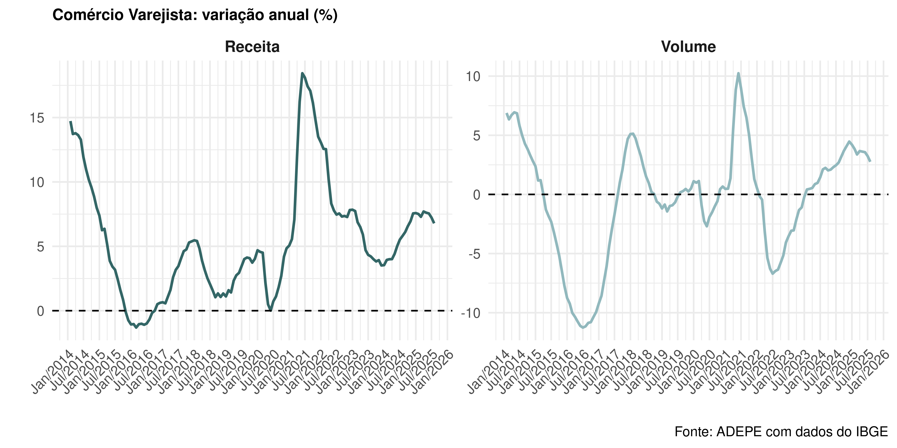

| Date | Receita | Volume |
|---|---|---|
| 2025-04-01 | -1.61 | -2.09 |
| 2025-05-01 | 0.15 | 0.04 |
| 2025-06-01 | -3.11 | -3.34 |
| 2025-07-01 | 2.17 | 1.86 |
| 2025-08-01 | 0.96 | 0.84 |
| 2025-09-01 | 0.65 | 0.18 |
Pesquisa Mensal do Comércio
Sumário
- Sobre os Resultados
- Resultado Nacional
- Resultado Estadual
- Resultado Nacional
Sumário Empresarial
O comércio varejista registrou um crescimento significativo em janeiro de 2024, tanto a nível nacional quanto no estado de Pernambuco. Destacam-se os resultados positivos na Produção Mensal do Comércio (PMC), indicando uma recuperação contínua do setor.
Em Pernambuco, apesar dos resultados negativos em relação ao mês anterior, houve uma melhora considerável em comparação com o mesmo período do ano anterior, especialmente nos setores de livros, atacado e farmacêuticos.
A nível nacional, embora tenha havido uma leve diminuição na margem, os números interanuais mostraram uma recuperação sólida, com destaque para os setores de atacado e hipermercado. Esses resultados refletem uma tendência positiva e promissora para o comércio varejista em ambos os contextos.
Resultado Nacional
Em janeiro de 2024, o comércio varejista registrou um aumento significativo no volume de vendas, com um crescimento de 2,5% em relação ao mês anterior, após uma queda de 0.73%. Esse desempenho superou as expectativas do mercado, que variavam entre uma queda de 1,1% e um aumento de 1,9%, com uma mediana de 0,2%.
Na comparação com o mesmo período do ano anterior, o volume de vendas do varejo aumentou 6,82%, superando o crescimento de 0,07% observado no mês anterior. Essa aceleração foi além das expectativas dos analistas, que previam um intervalo de variação entre uma queda de 1,9% e um aumento de 3,3%, com uma mediana de 0,8%.
| Date | Receita | Volume |
|---|---|---|
| 2025-04-01 | 6.55 | 1.12 |
| 2025-05-01 | 5.76 | 0.99 |
| 2025-06-01 | 0.12 | -4.03 |
| 2025-07-01 | 1.74 | -2.39 |
| 2025-08-01 | 2.07 | -2.11 |
| 2025-09-01 | 4.99 | 1.14 |
| Date | Receita | Volume |
|---|---|---|
| 2025-04-01 | 7.01 | 2.69 |
| 2025-05-01 | 6.88 | 2.39 |
| 2025-06-01 | 6.41 | 1.92 |
| 2025-07-01 | 5.66 | 1.14 |
| 2025-08-01 | 5.30 | 0.72 |
| 2025-09-01 | 5.25 | 0.67 |
Visualização
Variação na Margem

Acima, podemos observar as variações da PMC graficamente. É evidente um resultado forte em todas as métricas analisadas. É importante para o setor dado que aumenta o tickete médio do comércio.
Resultado Nacional
- Os dados apresentados revelam um desempenho robusto na Produção Mensal do Comércio (PMC), com crescimento em todas as métricas analisadas. Este resultado positivo indica uma recuperação contínua do setor varejista, superando as expectativas do mercado. Essa tendência ascendente sugere um ambiente econômico favorável e promissor para os próximos períodos
Resultado Pernambuco
Na análise mensal, Pernambuco apresentou uma melhora em relação ao mês anterior, apesar dos resultados ainda serem negativos. A variação na receita passou de -5,04% para -2,59%, enquanto o volume de vendas saiu de -4,47% para -1,46%.
Entretanto, olhando para a comparação com o mesmo período do ano anterior, os resultados continuam positivos, refletindo o desempenho observado em dezembro. Houve uma pequena melhora na receita interanual, de 4,88% para 5,22%, e no volume, de 3,86% para 4,85%.
No acumulado, os valores também são positivos, com um crescimento de 5,72% na receita e de 3,92% no volume, evidenciando uma recuperação consistente apesar dos desafios enfrentados no curto prazo.
| Date | Receita | Volume |
|---|---|---|
| 2025-04-01 | 2.44 | 2.78 |
| 2025-05-01 | -1.96 | -2.62 |
| 2025-06-01 | -1.19 | -1.92 |
| 2025-07-01 | 1.80 | 2.01 |
| 2025-08-01 | -1.60 | -1.64 |
| 2025-09-01 | 0.81 | -0.36 |
| Date | Receita | Volume |
|---|---|---|
| 2025-04-01 | 8.41 | 4.68 |
| 2025-05-01 | 7.27 | 3.42 |
| 2025-06-01 | 4.24 | 0.41 |
| 2025-07-01 | 6.01 | 1.75 |
| 2025-08-01 | 0.28 | -3.13 |
| 2025-09-01 | 1.01 | -2.31 |
| Date | Receita | Volume |
|---|---|---|
| 2025-04-01 | 7.99 | 4.72 |
| 2025-05-01 | 7.98 | 4.60 |
| 2025-06-01 | 7.77 | 4.33 |
| 2025-07-01 | 7.36 | 3.74 |
| 2025-08-01 | 6.62 | 2.89 |
| 2025-09-01 | 5.61 | 1.77 |
Visualização
Variação na Margem

- acima os resultados para Pernambuco, observa-se uma queda na margem, ainda que menor e o resultado fote nas outras métricas.

Resumo PE
Pernambuco apresentou uma melhora significativa em seus indicadores de comércio varejista em relação ao mês anterior, embora ainda tenham registrado variações negativas tanto na receita quanto no volume de vendas
A variação interanual e anual permanece positiva, refletindo a alta performance do mês de dezembro, com uma ligeira melhoria nos índices.
No acumulado, os números também são positivos, sugerindo uma tendência de recuperação contínua. Esses resultados indicam uma resiliência e uma trajetória de crescimento para o estado de Pernambuco.
Resultado PMC Restrito BR
Analisando os resultados da Produção Mensal do Comércio (PMC) em âmbito nacional, notamos uma leve diminuição na margem, com a receita passando de 103,56 para 99,66, e o volume de vendas refletindo uma tendência similar
Entretanto, ao compararmos com o mesmo período do ano anterior, observamos uma melhora considerável nos resultados. A variação interanual na receita subiu de 3,85% para 5,75%, enquanto no volume de vendas houve um aumento significativo, passando de 1,25% para 4,07%.
No acumulado, apesar de uma leve queda na receita, que ficou em 3,71%, o volume registrou uma melhora sutil, atingindo 1,76%.
| Date | Receita | Volume |
|---|---|---|
| 2025-04-01 | 117.28 | 104.17 |
| 2025-05-01 | 122.08 | 108.48 |
| 2025-06-01 | 114.58 | 102.03 |
| 2025-07-01 | 119.37 | 106.84 |
| 2025-08-01 | 119.42 | 107.14 |
| 2025-09-01 | 114.14 | 102.56 |
| Date | Receita | Volume |
|---|---|---|
| 2025-04-01 | 12.13 | 5.32 |
| 2025-05-01 | 7.59 | 1.80 |
| 2025-06-01 | 5.54 | 0.45 |
| 2025-07-01 | 6.29 | 1.20 |
| 2025-08-01 | 5.33 | 0.30 |
| 2025-09-01 | 5.30 | 0.77 |
| Date | Receita | Volume |
|---|---|---|
| 2025-04-01 | 8.71 | 3.41 |
| 2025-05-01 | 8.46 | 2.99 |
| 2025-06-01 | 8.22 | 2.75 |
| 2025-07-01 | 8.02 | 2.53 |
| 2025-08-01 | 7.70 | 2.17 |
| 2025-09-01 | 7.61 | 2.11 |
Visualização Restrito
Aqui vem o Texto:
Variação na Margem

- Os resultados mencionados anteriormente estão refletidos acima. Notavelmente, destaca-se o volume, que se apresenta como o valor mais expressivo na margem
Resultado PMC Restrito PE
No resultado restrito, Pernambuco demonstrou um desempenho positivo em todas as métricas. A variação na margem revela uma mudança significativa em relação ao mês anterior, onde a receita, anteriormente em -0,25%, agora alcançou 2,00%, enquanto o volume de vendas subiu de 0,08% para 2,91%.
Além disso, ao compararmos com o mesmo mês do ano anterior, notamos uma evolução considerável. A variação na receita passou de 1,21% para 5,19%, enquanto o volume de vendas saiu de -1,17% para 4,32%. Esses números evidenciam uma recuperação notável e indicam uma tendência positiva para o comércio varejista em Pernambuco.
| Date | Receita | Volume |
|---|---|---|
| 2025-04-01 | 0.45 | 0.90 |
| 2025-05-01 | -0.88 | -1.18 |
| 2025-06-01 | 0.53 | -0.08 |
| 2025-07-01 | -0.19 | -0.25 |
| 2025-08-01 | -0.26 | -0.42 |
| 2025-09-01 | 0.72 | 0.35 |
| Date | Receita | Volume |
|---|---|---|
| 2025-04-01 | 9.88 | 5.51 |
| 2025-05-01 | 6.70 | 3.12 |
| 2025-06-01 | 5.93 | 2.18 |
| 2025-07-01 | 4.85 | 1.11 |
| 2025-08-01 | 2.84 | -0.71 |
| 2025-09-01 | 4.87 | 1.01 |
| Date | Receita | Volume |
|---|---|---|
| 2025-04-01 | 7.70 | 3.67 |
| 2025-05-01 | 7.61 | 3.62 |
| 2025-06-01 | 7.55 | 3.57 |
| 2025-07-01 | 7.24 | 3.25 |
| 2025-08-01 | 6.78 | 2.76 |
| 2025-09-01 | 6.61 | 2.46 |
Visualização Restrito PE
Variação na Margem

Ao observar os resultados apresentados acima, destaca-se o desempenho positivo, especialmente na margem.


Resultado PMC por Setor
- Agora podemos analisar os setores, com destaque para os segmentos de livros e produtos similares, atacado e artigos farmacêuticos.
| Data | Setor | Receita | Volume |
|---|---|---|---|
| 2025-09-01 | Livros, jornais, revistas e papelaria | -7.7 | -11.6 |
| 2025-09-01 | Equipamentos e materiais para escritório, informática e comunicação | 14.1 | 12.4 |
| 2025-09-01 | Outros artigos de uso pessoal e doméstico | 15.8 | 11.2 |
| 2025-09-01 | Veículos, motocicletas, partes e peças | -7.9 | -10.5 |
| 2025-09-01 | Material de construção | 2.4 | 1.5 |
| 2025-09-01 | Atacado especializado em produtos alimentícios, bebidas e fumo | 1.2 | -2.1 |
| Data | Setor | Receita | Volume |
|---|---|---|---|
| 2025-09-01 | Hipermercados e supermercados | 0.9 | -2.9 |
| 2025-09-01 | Tecidos, vestuário e calçados | 0.6 | -3.0 |
| 2025-09-01 | Móveis e eletrodomésticos | 11.5 | 12.6 |
| 2025-09-01 | Móveis | -10.2 | -10.5 |
| 2025-09-01 | Eletrodomésticos | 18.5 | 19.7 |
| 2025-09-01 | Artigos farmacêuticos, médicos, ortopédicos, de perfumaria e cosméticos | 2.0 | -1.8 |
Resultado PMC por Setor
- Na variação em comparação com o mesmo mês do ano anterior, novamente destacam-se os mesmos setores, refletindo o que pode ser um padrão na série histórica.
| Data | Setor | Receita | Volume |
|---|---|---|---|
| 2025-09-01 | Livros, jornais, revistas e papelaria | 7.6 | 2.5 |
| 2025-09-01 | Equipamentos e materiais para escritório, informática e comunicação | -9.4 | -9.6 |
| 2025-09-01 | Outros artigos de uso pessoal e doméstico | 10.0 | 6.0 |
| 2025-09-01 | Veículos, motocicletas, partes e peças | -0.5 | -4.1 |
| 2025-09-01 | Material de construção | 2.3 | 0.4 |
| 2025-09-01 | Atacado especializado em produtos alimentícios, bebidas e fumo | 8.4 | 4.8 |
| Data | Setor | Receita | Volume |
|---|---|---|---|
| 2025-09-01 | Hipermercados e supermercados | 5.0 | 0.7 |
| 2025-09-01 | Tecidos, vestuário e calçados | 3.1 | 1.0 |
| 2025-09-01 | Móveis e eletrodomésticos | 10.4 | 11.3 |
| 2025-09-01 | Móveis | 2.6 | 3.4 |
| 2025-09-01 | Eletrodomésticos | 12.7 | 13.7 |
| 2025-09-01 | Artigos farmacêuticos, médicos, ortopédicos, de perfumaria e cosméticos | 3.2 | -1.5 |
Resultado PMC por Setor
No acumulado o setor de atacado e hipermercado são os destaques.
| Data | Setor | Receita | Volume |
|---|---|---|---|
| 2025-09-01 | Livros, jornais, revistas e papelaria | 6.9 | 1.8 |
| 2025-09-01 | Equipamentos e materiais para escritório, informática e comunicação | -7.8 | -6.7 |
| 2025-09-01 | Outros artigos de uso pessoal e doméstico | 9.9 | 6.0 |
| 2025-09-01 | Veículos, motocicletas, partes e peças | 2.5 | -0.7 |
| 2025-09-01 | Material de construção | 2.5 | 0.4 |
| 2025-09-01 | Atacado especializado em produtos alimentícios, bebidas e fumo | 7.2 | 3.2 |
| Data | Setor | Receita | Volume |
|---|---|---|---|
| 2025-09-01 | Hipermercados e supermercados | 6.7 | 2.4 |
| 2025-09-01 | Tecidos, vestuário e calçados | 1.3 | -0.2 |
| 2025-09-01 | Móveis e eletrodomésticos | 10.9 | 12.3 |
| 2025-09-01 | Móveis | 3.4 | 4.5 |
| 2025-09-01 | Eletrodomésticos | 13.3 | 14.7 |
| 2025-09-01 | Artigos farmacêuticos, médicos, ortopédicos, de perfumaria e cosméticos | 5.0 | -0.5 |